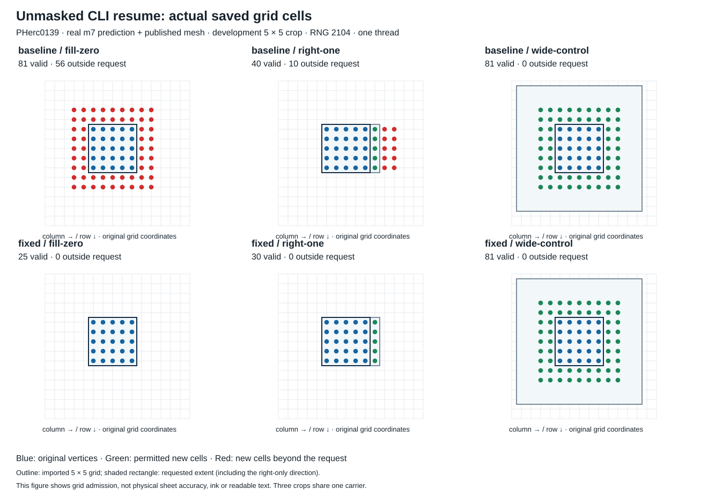

Vollständiger nativer Prüflauf bestanden: 22 Prozesse. Das Beweisziel ist die angeforderte Rastergrenze.
Baseline: Main e2254ebe0168a232e5ba7b94997c749b4e6a4544. Der Fix erhält den 25-Zellen-Arbeitsrand für Optimierung und begrenzt unmaskierte Resume-Kandidaten auf die bereits ausgewählten Extras. Windows/GCC, Debug -O0 -g0, ein Thread, Seed 2104. Core/Tracer und aktuelle offizielle CLI-Quelle wurden frisch gebaut.

| Variante | Profil | Gültig | Neu | Außerhalb Anfrage |
|---|---|---|---|---|
| baseline | fill-zero | 81 | 56 | 56 |
| baseline | right-one | 40 | 15 | 10 |
| baseline | wide-control | 81 | 56 | 0 |
| fixed | fill-zero | 25 | 0 | 0 |
| fixed | right-one | 30 | 5 | 0 |
| fixed | wide-control | 81 | 56 | 0 |
Quellenbezug: gebaut wurde e2254ebe. Der spätere Main 6f202456 hat denselben vollständigen volume-cartographer-Git-Teilbaum c48bb8937fd96bc0a6852e13fccc8f4968301326; seine neun Änderungen betreffen foundation/. Das ist kein Neubau der späteren Root-Versionsmetadaten.
Erster Versuch separat erhalten: ein Baseline-Prozess wurde nach 120 Sekunden beendet und vollständig eingesammelt. Protokollrevision 2 verlängerte ausschließlich das äußere Limit auf 600 Sekunden. Die hier gezeigten abgeschlossenen Ergebnisse stammen aus dem zweiten Versuch; der erste Timeout ist kein abgeschlossener Vergleich.
| Crop | Variante | Profil | Gültig | Außerhalb | Gate |
|---|---|---|---|---|---|
| development | baseline | fill-zero | 81 | 56 | False |
| development | baseline | right-one | 40 | 10 | False |
| development | baseline | wide-control | 81 | 0 | True |
| development | fixed | fill-zero | 25 | 0 | True |
| development | fixed | right-one | 30 | 0 | True |
| development | fixed | wide-control | 81 | 0 | True |
| new-crop-1 | baseline | fill-zero | 81 | 56 | False |
| new-crop-1 | baseline | right-one | 40 | 10 | False |
| new-crop-1 | baseline | wide-control | 81 | 0 | True |
| new-crop-1 | fixed | fill-zero | 25 | 0 | True |
| new-crop-1 | fixed | right-one | 30 | 0 | True |
| new-crop-1 | fixed | wide-control | 81 | 0 | True |
| new-crop-2 | baseline | fill-zero | 81 | 56 | False |
| new-crop-2 | baseline | right-one | 40 | 10 | False |
| new-crop-2 | baseline | wide-control | 81 | 0 | True |
| new-crop-2 | fixed | fill-zero | 25 | 0 | True |
| new-crop-2 | fixed | right-one | 30 | 0 | True |
| new-crop-2 | fixed | wide-control | 81 | 0 | True |
Wide-Paare: XYZ und Generationen einschließlich ungültiger Zellen bytegleich dekodiert. Zusätzliche Kontrolle: positive grow_extra bleiben bei disable=true erhalten; frische Seeds werden vor/nach verglichen. Eingaben und Binärdateien blieben während der Suite unverändert.
Alle drei Crops stammen aus einem öffentlichen PHerc0139-Prädiktionsträger. Kein unabhängiger Scrolltest, keine anatomische oder Ink-Qualitätsaussage. Vorhandene nichtleere allowed-growth-Masken schützen die importierte Außenkante bereits; für diesen maskierten Pfad wird kein zusätzlicher Grenzschutz behauptet. Der Standard-CLI-Pfad ist unmaskiert. GUI-Erreichbarkeit wurde im Quelltext geprüft, die GUI nicht ausgeführt. Kein Laufnachweis für grobe Wachstumsskalierung oder Inpaint. PR #2133 beschreibt die Limitation bereits.
diff --git a/volume-cartographer/core/src/GrowPatch.cpp b/volume-cartographer/core/src/GrowPatch.cpp
--- a/volume-cartographer/core/src/GrowPatch.cpp
+++ b/volume-cartographer/core/src/GrowPatch.cpp
@@ -3529,6 +3529,7 @@
+ constexpr int grid_margin_each_side = 25;
int w, h;
if (resume_surf) {
cv::Mat_<uint16_t> resume_generations = resume_surf->channel("generations");
@@ -3556,7 +3557,6 @@
const int grow_max_extra_rows = std::max(grow_extra_rows, params.value("grow_max_extra_rows", gen_diff));
const int extra_cols = disable_grid_expansion ? grow_extra_cols : grow_max_extra_cols;
const int extra_rows = disable_grid_expansion ? grow_extra_rows : grow_max_extra_rows;
- constexpr int grid_margin_each_side = 25;
w = resume_generations.cols + 2 * extra_cols + 2 * grid_margin_each_side;
h = resume_generations.rows + 2 * extra_rows + 2 * grid_margin_each_side;
std::cout << "GrowPatch work grid " << w << "x" << h
@@ -3573,6 +3573,10 @@
}
cv::Size size = {w,h};
cv::Rect bounds(0,0,w,h);
+ // The extra margin is optimization context, not requested resume growth.
+ const cv::Rect resume_growth_bounds(grid_margin_each_side, grid_margin_each_side,
+ w - 2 * grid_margin_each_side,
+ h - 2 * grid_margin_each_side);
int x0 = w/2;
int y0 = h/2;
@@ -4730,6 +4734,7 @@
auto append_candidate = [&](const cv::Vec2i& p) {
if (!bounds.contains(cv::Point(p[1], p[0])) ||
+ (resume_surf && !resume_growth_bounds.contains(cv::Point(p[1], p[0]))) ||
(trace_params.state(p) & STATE_PROCESSING) != 0 ||
(trace_params.state(p) & STATE_LOC_VALID) != 0) {
return;
Vollständige gespeicherte native CLI-Ausgabe: Baseline und Fix nebeneinander. Beide nativen Prozesse beenden regulär mit Exitcode 0; der Prüfer meldet für die verletzte Baseline-Anfrage erwartungsgemäß Exitcode 1.
{"profile": "fill-zero", "valid_points": 81, "new_points": 56, "outside_requested_grid": 56, "grid_offset": [4, 4], "original_grid_extent_rc": [-2, 6, -2, 6], "violations": ["valid points outside requested grid", "zero expansion must preserve all original coordinates exactly"], "passed": false, "wall_seconds": 103.68700000000172}
{"profile": "right-one", "valid_points": 40, "new_points": 15, "outside_requested_grid": 10, "grid_offset": [2, 2], "original_grid_extent_rc": [0, 4, 0, 7], "violations": ["valid points outside requested grid"], "passed": false, "wall_seconds": 41.56200000000172}
{"profile": "wide-control", "valid_points": 81, "new_points": 56, "outside_requested_grid": 0, "grid_offset": [4, 4], "original_grid_extent_rc": [-2, 6, -2, 6], "violations": [], "passed": true, "wall_seconds": 182.92199999999866}
{"profile": "fill-zero", "valid_points": 25, "new_points": 0, "outside_requested_grid": 0, "grid_offset": [2, 2], "original_grid_extent_rc": [0, 4, 0, 4], "violations": [], "passed": true, "wall_seconds": 1.4530000000013388}
{"profile": "right-one", "valid_points": 30, "new_points": 5, "outside_requested_grid": 0, "grid_offset": [2, 2], "original_grid_extent_rc": [0, 4, 0, 5], "violations": [], "passed": true, "wall_seconds": 26.031000000002678}
{"profile": "wide-control", "valid_points": 81, "new_points": 56, "outside_requested_grid": 0, "grid_offset": [4, 4], "original_grid_extent_rc": [-2, 6, -2, 6], "violations": [], "passed": true, "wall_seconds": 83.43799999999828}
Diese Browseransicht zeigt gespeicherte tatsächliche Prüfausgaben; sie ist keine GUI-Bedienung und kein unabhängiger menschlicher Review.